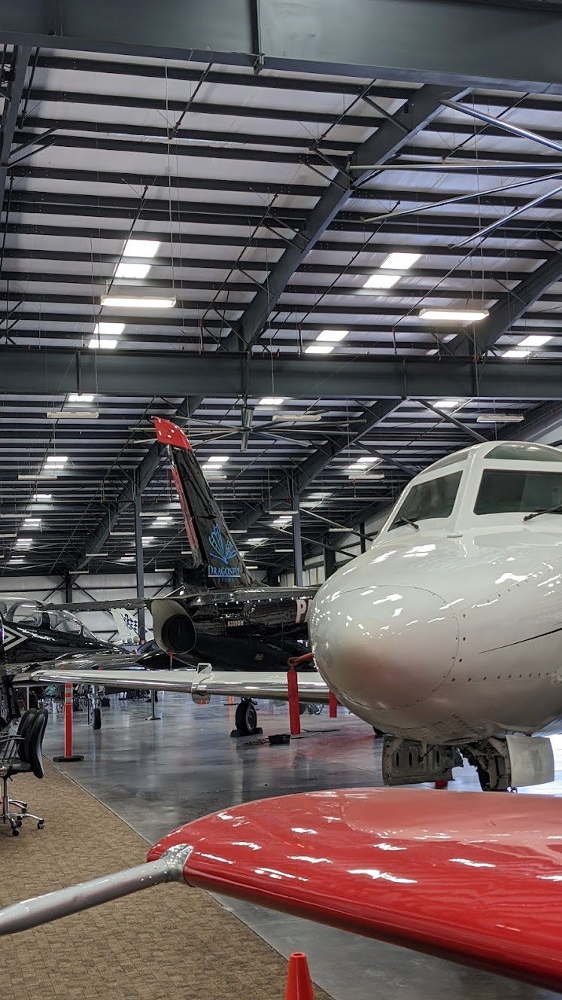
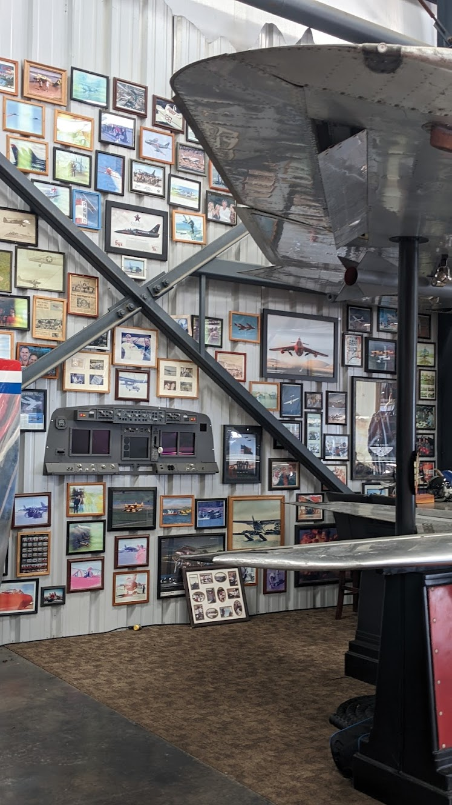
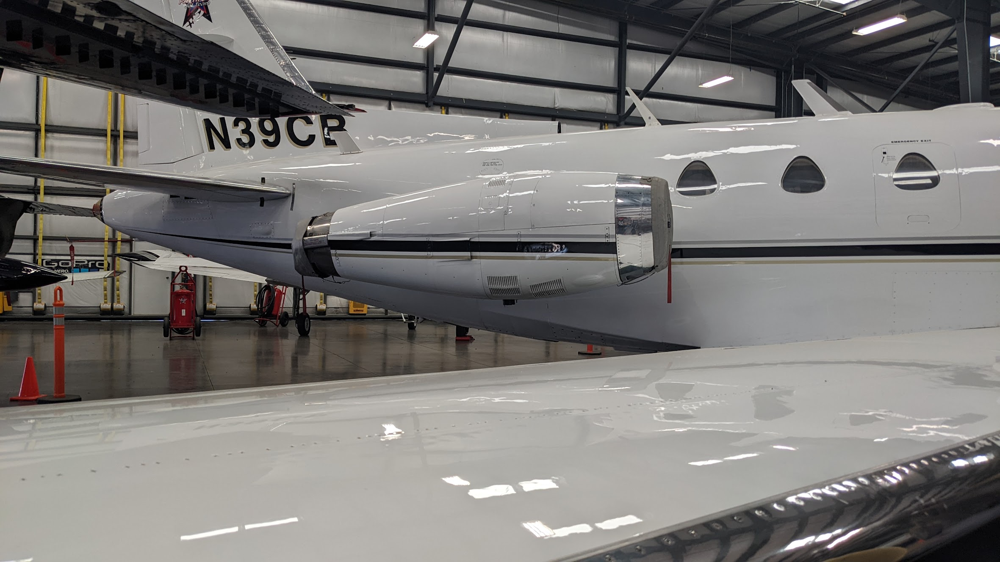

Career Exploration





A Multitude of Opportunites...
During my time in the engineering program, I have met a number of industry professionals through workplace field trips and guest speakers…some have shown me a deeper vision into fields I wish to undertake. Others have shown me field that I'd like to stay far away from. No matter what, there was something always to learn about myself and from the field trips themselves.
Field Trips
My favorite field trip was the Patriots Jet Foundation Field trip, as the idea of working with planes and flying through the clouds brings me back to my dreams as a child. The idea of flying through space was part of my Star Wars dream, so watching the jets take off reminded me of that. I learnt about how pilots train, playing around with the plane simulations. Even the simulation was hard to navigate, especially turning with such big crafts. However, playing around and trying to make a perfect landing on short notices was quite fun. I met an entrepreneur who was working on long distance drones that could drop off packadages, in order to replace the system that companies like Amazon use to transport goods to customers. I found the idea to be interesting, especially trying to incorporate AI into the drones' navigation. The navigation would have to be so specific, more accurate than a GPS, that it was interesting how they managed to do this. This related to my Destination Imagination Technical Challenge a few years ago. Our goal was to use a drone to drop off a specific load at a location. However, since the location was within a small distance, GPS navigation was out of question. We attempted to use AprilTags or QR Codes, since AI was too advanced for us. However, we were not successful. Thus, this field trip provided a learning experience that improved my own knowledge from previous products.
Another field trip I went on was the Dig Deep Farms. I am part of Mr. Kaehms's Enviromental Tech Club, and thus this field trip interested me and reminded me once again how much I would like to work within this field. The field trip gave me ideas for how DHS could have its own sustainable greenhouse. This community driven garden is quite inspiring, as it aims to improve the Eden area's issue with employment rates, diabetes rates, childhood obesity, and heart disease. Though the amount of technology involvment is still being improved, it was fun meeting the gardeners of the Dig Deep Farm, and watching them explain how fun it is for them to be able to watch something grow from a tiny seed into something that helps his community get stronger. Walking around the farm and listening to the locals explain how much this farm has changed their lives was mesmerizing, and reminded me how I could use technology and biology to give back to the community.
Guest Speakers
I found Gary Richter's adventures as a security analyst for Sandia National Labs to be quite the tale, and it drew my attention so unexpectedly. Though he could not share details about his top secret missions, I would've never thought that I could be interested in the nuclear energy field. This guest speaker taught me that life of a security analyst could be quite the adventure, and not always computer-desk work. My previous cybersecurity experience does not compare to Richter's tales, but my Cal Poly Innovation Challenge put me in the place of a security analyst. I could be running around the Cal Poly campus for clues, in order to undersand what occured at a murder scene. From investigating a real base's barracks to coding on my computer, Richter's stories reminded me of this. The job of a security analyst was mesmerizing, especially with his stories about finding nuclear warheads and disabling them. When he told the story about living with a local tribe and hunting tigers to identify terrorists with nuclear weapons, I know he had my attention. I would love to experience that as well, since the dangers seem to just make the job all the more interesting. Coding at a desk could be tiresome, but being a engineering detective? Always moving on the job? His stories taught me the dangers and also the excitement of risk.
The guest speaker Donald James talked about how important kindness and strategic communications is to the workforce. In order to get a job, one must be able to speak strongly about themselves, in order to market products. All companies require someone who is a strong speaker, able to talk passionately and emotionally about their wishes. This brings the idea of consulting and speaking (soft skills) to the table. It does not matter how great one's skills is, but how great one can talk about their skills. After all, if someone is quiet about their skills, then no one knows what they can do. This makes them useless. James gave us a powerpoint presentation about the gains of strategic communications, and how to be effective. It was eye opening to see someone from such a prestigious organization such as NASA talking about how important kindness and communication skills are to the real world workforce.